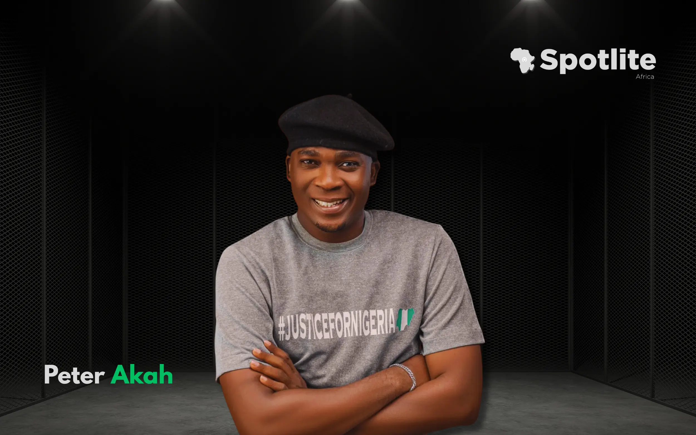
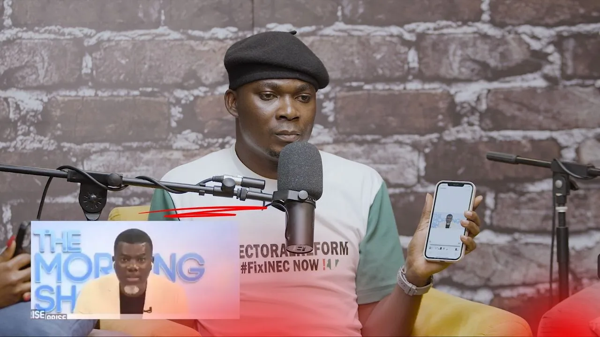
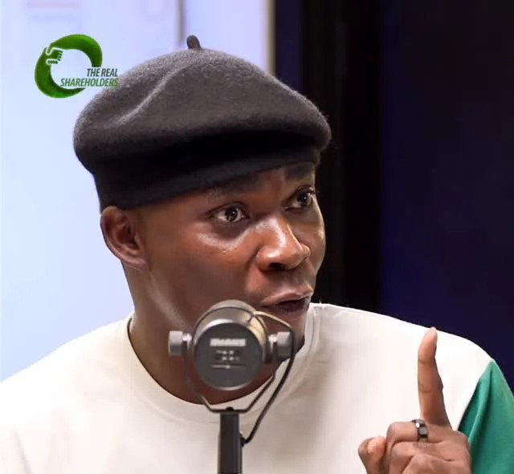

Randy Peterz: The Architect of Unfiltered Change
Picture a man who mouths a roar louder than any hashtag, a young Igbo son driven by the fire in his gut to demand more, not for clout, but for the countless lives flickering beneath the weight of injustice. That man is Randy Peterz, real name Peter Akah, and if his story doesn’t give you goosebumps, you’re not listening closely.
🎤 The Voice That Echoed When Others Whispered
Born November 7, 1993, Randy Peterz is more than a social media personality, he’s a human rights advocate, political firebrand, and changemaker who refused to let tired systems be the lullaby of youth dreams
He emerged from the digital trenches, TikTok, X, Instagram, and YouTube, to challenge Nigeria's status quo. His explosive lines dissect bad governance, mental slavery, poverty, and voter apathy with surgical precision, no filter, no panic, just raw truth

🔥 #NoElectoralReformNoElection, A Call That Shook the Nation
In early 2025, Randy led the thunderous #NoElectoralReformNoElection movement, mobilizing a generation to demand revamping of INEC’s flawed processes. He marched straight to the gates of the National Assembly, delivered a scorching letter under #FIXINEC, and paused Nigerian democracy in its tracks
That act of courage didn’t vanish into thin air. Senator Ireti Kingibe praised his “courage, determination and commitment to our democracy,” promising to champion his plea in the Senate. A youth-driven disturbance with political ripples? Check, that’s Randy Peterz.
🕊 Fighting for the Voiceless, The Scott Iguma Campaign
Beyond electoral reform, Randy became the emotional thunderbolt behind the campaign for Scott Iguma, a Nigerian activist imprisoned on cyberbullying charges. He spoke for the silenced, amplifying Iguma’s plea on Instagram and across media, transforming a personal tragedy into a national matter of conscience. He turned sorrow into spectacle, forcing the court of public opinion to reckon with systemic overreach.
📻 The Honest Bunch Effect
On The Honest Bunch podcast, Randy didn’t just appear, he exploded onto the conversation. His reasoned rage against Nigeria’s dysfunction, from political rot to institutional rot, offered both diagnosis and remedy. His voice notched up the volume, demanding that Nigeria face itself, repent, and rebuild.
🎭 He Didn’t Ask for the Spotlight. He Owned It
Randy Peterz wears many hats: actor, entertainer, MC, but above all, changemaker. But here’s the beauty: he never sought the spotlight, it found him, borne aloft on his own authenticity, resilience, and unswerving humanity.
- He educated millions on democratic rights, electoral systems, civic responsibility, and youth participation.
- He humanized activists, turning tragedies like Iguma’s into collective heartbreak and national dialogue.
- He pressed the powerful, dragging senators and the public into a conversation they couldn’t ignore.
A Rollercoaster of Emotion, A Symphony of Impact
- A voice born in the belly of disillusionment…
- Spitting fire at institutions that traded citizens for schedules…
- Turning pain into purpose…
- Standing unbowed in the face of apathy…
- Then planting his flag in the soil of civic awakening.
He’s not preaching; he’s performing the art of disruption. The canvas of a nation weighing its youth’s worth, he’s painted it red.
🎁 Let’s Shower Him with Flowers
Here’s the bouquet:
- Electoral Reformation: His #NoElectoralReformNoElection movement wasn’t a campaign, it was civic litmus test that rattled parliamentary marble in Abuja.
- Humanization of Abuses: Turning the case of Scott Iguma from a report headline into a emotional massacre of empathy and solidarity.
- Cultural Instigator: Through social media, he sparked conversations, from governance to mental slavery, pushing youth from likes to action.
- Youth Empowerment: He’s a beacon for young Nigerians, proving that your voice, when raw and committed, can quake institutions.
🌱 Reader, This is Your Curtain Call
If you’ve felt that flicker, something inside whispering “something must give” , then Randy’s work isn’t just inspiring, it’s rallying. It’s a siren call to every young soul: pick your mountain, stand your ground, light your match.
Because Changemakers are less about the size of the stage, more about the scale of your heart. And Randy Peterz? His heart’s a megaphone.
📝 Final Curtain: Pedestal & Emblems
Let’s place him on the pedestal he earned, not by virtue of notoriety, but by performance: a script of courage, compassion, and civic craftsmanship.
If you thought activism was dead or that digital voices were whispers in the void, let Randy Peterz revive your belief. This is more than a story, it’s a blueprint.
And what’s your blueprint? What mountain will you climb?
Spotlite Africa thanks Randy Peterz for reminding us that democracy isn’t a spectator sport, it’s our anthem.Stay inspired. Be the spark.